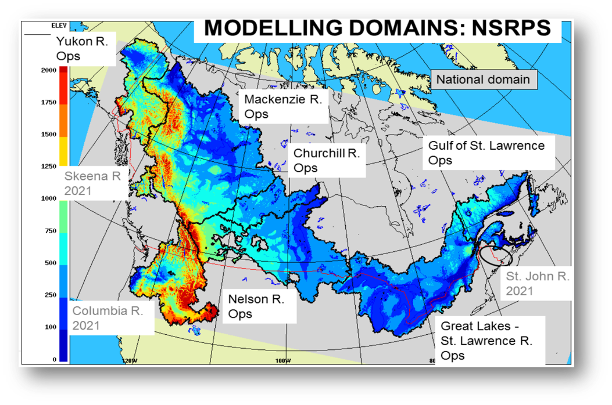

National Surface and River Prediction System (NSRPS)
Overview
NSRPS is a Complete hydro-meteorological prediction system, which aims to provide the best possible representation of the current and future states of the land surface, as well as the movement of water over and through the soil column and through the lake and river networks.
Current version: 3.1.0
Domain
Discharge outputs from NSPRS are currently implemented at a 1-km resolution over six major river basins representing ~50% of Canada. NSRPS is currently established in the following basins:
- Yukon River Basin
- Mackenzie River Basin
- Nelson River Basin
- Churchill River Basin
- Great Lakes and St. Lawrence River Basin

As NSRPS is composed of different sub-systems, both the domain and spatial resolution vary based on the which sub-system the output is derived.
System Components
NSRPS is an integrated chain of numerical prediction systems, driven by high-resolution atmospheric forcing fields from the High Resolution Deterministic Prediction System (HRDPS). The component systems of NSRPS include:
- High Resolution Ensemble Precipitation Analysis (HREPA)
- Canadian Land Data Assimilation System (CaLDAS-Sat)
- Deterministic Hydrological Prediction System (DHPS)
- Simulation Hydrodynamique Opérationnel (SHOP)
Outputs
NSRPS products are implemented at a 1-km resolution. The current outputs from NSRPS are:Data Access
Currently NSPRS data is only available through ECCC's internal Science Network.
License
The End-User Licence for Environment and Climate Change Canada's Data Servers specifies the conditions of use of this data.
Status
Current Status: Experimental
click here for descriptions of different operational statuses